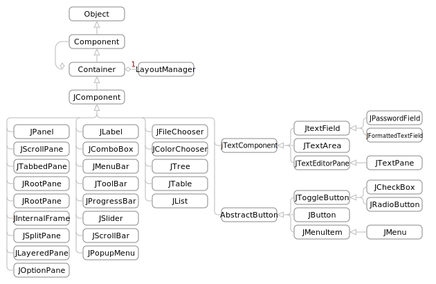

Java: GUI 프로그래밍
예제코드에서 다운로드는 첫 페이지 참조
각각의 실습코드는 SUB에 해당하는 폴더를 참조하세요.
| 인터페이스 명 | 특징 |
|---|---|
| AWT | Abstract Window Toolkit. 가장 기본적인 GUI Kit. 외관, 기능면에서 제한적일 수 있으며, 특정 플랫폼에 종속적일 수 있음 |
| Swing | AWT기반. 조금 더 많은 기능. 무거움. |
| Java FX | Java SE 8 부터 기본 라이브러리에 포함(AWT, Swing후속) 플랫폼 독립적, CSS스타일링, 2D/3D, 애니메이션, 웹 렌더링 등 지원 |
AWT
- Frame클래스를 상속받는 것 만으로도 구현이 가능
- 이벤트 처리를 위해 Listener등록
- GUI프로그램의 기본 개념을 이해하기에 좋은 실습자료
| 주제 | 폴더 | 파일 | 내용 |
|---|---|---|---|
| 기본 | a_Basic | A1 | GUI프로그래밍을 위한 최소한의 코드로 구현합니다. |
| A2 | 타이틀바에 문자열을 넣습니다. | ||
| B | 버튼을 추가합니다. | ||
| C | 버튼에 기능을 추가합니다. | ||
| D1 | 종료 기능을 넣습니다. | ||
| D2 | 종료 기능을 좀 더 간단하게 구현합니다. | ||
| 컴포넌트 | b_Component | A | label을 실습합니다. |
| B | button을 실습합니다. | ||
| C | checkbot, radiobutton을 실습합니다. | ||
| D | DropBox를 실습합니다. | ||
| E | ListBox를 실습합니다. 중복허용 모드와 중복불가 모드에 대해 알아봅니다. | ||
| F | Textarea로 입력 또는 출력을 실습합니다. | ||
| G | 새로운 다이얼로그를 생성하고, 메시지를 보냅니다. | ||
| H | text형식의 파일을 열어, 내용을 textarea에 출력합니다. | ||
| I | Menubar에 메뉴를 추가하고, 이벤트를 처리합니다. | ||
| 배치 | c_layout | A | 버튼을 5개 생성하고, 자동배치모드를 이용해서 배치합니다. |
| B | 동서남북모드로 버튼을 배치합니다. | ||
| C | 사각모드로, 가로/세로 사이즈를 미리 정하고 순서대로 배치합니다. | ||
| D | 카드모드는 순서대로 번갈아가며 배치됩니다. | ||
| Graphics | d_Graphic | A1 | drawRec, drawRoundRect, drawArc, drawPolygon, fillRect, fillRoundRect, fillOval, clearRect를 실습합니다. |
| A2 | setCurve를 이용해 곡선을 그립니다. | ||
| A3 | 마우스를 드레그하면, 따라서 선을 그립니다. | ||
| B1 | jpg파일을 출력합니다. | ||
| B2 | 인터넷 이미지를 가져와 출력합니다. | ||
| B3 | 인터넷 이미지를 가져와 출력합니다. 로딩이 완료될 때까지 기다렸다가 출력합니다. | ||
| B4 | 이미지를 출력할 때, 타원으로 잘라서 타원모양만 출력합니다. | ||
| C1 | Line2D, Rectangle2D, Ellipse2D 클래스를 이용해서 출력합니다. | ||
| C2 | GeneralPath.lineTo()를 이용해서 자유곡선을 그립니다. | ||
| C3 | 클릭된 위치 정보를 가져와서, 이전 클릭된 위치까지 선을 긋습니다. | ||
| C4 | 두께(width), 선처리(CAP, JOIN)과 BEVEL, type(점선 등)을 변경해서 그립니다. | ||
| D1 | 그라데이션을 이용해서 영역을 채웁니다. | ||
| D2 | 패턴을 이용해서 영역을 채웁니다. | ||
| E | 대상의 투명도를 조정해서 다시 칠합니다.(루틴 시간이 걸립니다.) | ||
| F1 | 이미 그려진 객체를 키보드 방향키 입력에 따라 좌우, 상하로 1px씩 움직입니다. | ||
| F2 | 이미 그려진 객체를 키보드 좌우 버튼에 따라 시계/반시계 방향으로 15도씩 움직입니다. | ||
| F3 | 이미 그려진 객체를 눌려진 버튼에 따라, 확대/축소, X/Y축 반전을 합니다. | ||
| G | 성능 개선을 위해 버퍼에 그린 후 출력합니다. | ||
| 예제 | e_Example | textOut | 버튼이 눌리면 문자를 출력합니다. |
| trafficLight | 체크박스 상태에 따라 대상을 변경합니다. |
Swing
- JFrame클래스를 상속받는 것으로 구현 (AWT : Frame)
- 더 다양한 컴포넌트가 구현되어 있음 (아래 그림 참조)

swing구조
| 주제 | 폴더 | 파일 | 내용 |
|---|---|---|---|
| 컴포넌트 | a_Component | A | JLabel, JTextField, JPasswordField, JFormattedTextField, JTextArea, JTextPane를 이용해서 출력합니다. |
| B | JCheckBox, JRadioButton, JButton | ||
| C | JComboBox, JList | ||
| D | JProgressBar, JSlider | ||
| E | JTree | ||
| F | JTable | ||
| G1 | JMenuItem, JMenu, JMenuBar, | ||
| G2 | JPopupMenu | ||
| H | JToolBar | ||
| I | JFileChooser, JColorChooser | ||
| J | image | ||
| K1 | JPanel, JScrollPane, JTabbedPane, JInternalFrame, JSplitPane | ||
| K2 | JLayeredPane, | ||
| K2 | JOptionPane | ||
| 배치 | b_Layout | A | 자동정렬을 통해 버튼 10개를 배치합니다. |
| A2 | 우측정렬로 바꿉니다. | ||
| B | 동서남북 배치를 이용해서 배치합니다. | ||
| C1 | Grid정렬을 통해서 순서를 임의배치합니다. | ||
| C2 | Grid를 병합해서 더 큰 영역을 만듭니다. | ||
| 이벤트 처리 | c_Event | A | 이벤트를 처리합니다. 암호는 "password"입니다. |
JavaFX
환경설정
캡쳐는 eclipse입니다. vscode는 ScenBuilder설치 부분 참고해 주세요. vscode에서도 수행 가능합니다.
-
javaFX코드를 다운로드. 라이브러리에 추가.
라이브러리 추가 [ 링크 ] : page 3 - 7 내용
모듈 추가 [ 링크 ] : page 8 -9 내용
--add-modules=javafx.controls,javafx.fxml
-
SceneBuilder를 다운받아 설치.
ScenBuilder설치 : page 11 - 14 내용
실습
코드는 Youtube:BroCode [ 링크 ] 를 참고하였습니다. 일부 코드는 수정되었습니다.
| 순서 | 주제 | 폴더 | 내용 |
|---|---|---|---|
| A | 윈도우 생성 | a_Start | 윈도우를 생성합니다. 버튼 2개를 생성하고 이벤트를 console에 출력합니다. |
| B | 전체화면 | b_FullScreen | 전체화면 모드로 프로그램을 실행합니다. 'q'를 누르면 해제됩니다. |
| C | 도형출력 | c_Drawing | 자유 직선, 도형 및 그림을 출력합니다. |
| D | 외부프로그램 | d_SceneBuilder | SceneBuilder를 설치합니다. 디자인 영역(.fxml)의 에디트합니다. 앞으로 예제는 모두 SceneBuilder를 사용합니다. |
| E | 연결하기 | e_Event | 이벤트와 객체를 연결합니다. |
| F | CSS | f_CssStyle | 객체에 class나 id를 부여해서 .css파일에서 디자인 합니다. |
| G | Multi Scene | g_Scene | 두 개의 Scene을 생성하고, 이벤트에 따라 Scene을 변경합니다. |
| H | Scene Message | h_Login | 첫 번째 화면에서 사용자 입력을 가져와서, 2번째 입력화면에서 사용합니다. |
| I | Alert | i_Logout | 간단한 팝업 메시지를 출력하고자 할 때, Alert를 사용해 경고합니다. |
| J | 이미지 | j_ImageView | 이미지를 출력합니다. |
| K | Text가져오기 | k_HowOldAreYou | 입력정보를 가져와 18살 초과이면 "성인입니다."를 출력합니다. |
| L | Radio선택 가져오기 | l_Quiz | 객체지향에 대한 간단한 Quiz를 풀어봅니다. |
| M | Picker | m_Picker | Picker 다이얼로그를 통해 좀 더 수월하게 날짜, 색 입력을 받습니다. |
| N | 선택상자 | n_ChoiceBox | ChoiceBox를 통해 입력받습니다. |
| O | 슬라이더 | o_Slider | 새로 슬라이더를 통해 온도계 입력을 받고 Text로 출력합니다. |
| P | 진행률 | p_Progress | hp(heal point)를 구현합니다. 타격버튼을 누르면 -10%, 물약 버튼을 누르면 55% 상승합니다. |
| Q | 스피너 | q_Spinner | textarea의 입력을 위/아래의 버튼으로 변경할 수 있습니다. |
| R | 리스트 | r_ListView | 입력받을 수 있는 리스트를 나열하고, 사용자가 선택합니다. |
| S | 트리뷰 | s_TreeView | 폴더구조와 같이, 입력을 트리구조로 구성하여, 나열된 선택을 '리스트'보다 효과적으로 표현합니다. |
| T | 메뉴 | t_MenuBar | 어플리케이션 상단에 메뉴바를 생성합니다. |
| U | 크기변경 | u_FlowPanel | 어플리케이션의 크기를 변경하면, 배치된 버튼을 자동재배치 합니다. |
| V | 키보드 | v_KeyEvent | 키보드 입력을 받아 console에 출력합니다. |
| W | 애니메이션 | w_Annimation | 이미지를 이동, 회전, 확대, 투명도변경을 동시에 적용합니다. |
| X | 영상 | x_Media | 영상을 재생, 멈춤, 이동 합니다. |
| Y | 웹페이지 | y_webView | 웹페이지에 주소를 입력하고, "불러오기"를 클릭합니다. 이동 기록을 기억하고 불러올 수 있습니다. |
| Z | 음악 | z_Musiz | MP3를 구현합니다. Song폴더에 3곡이 저장되어 있습니다. |